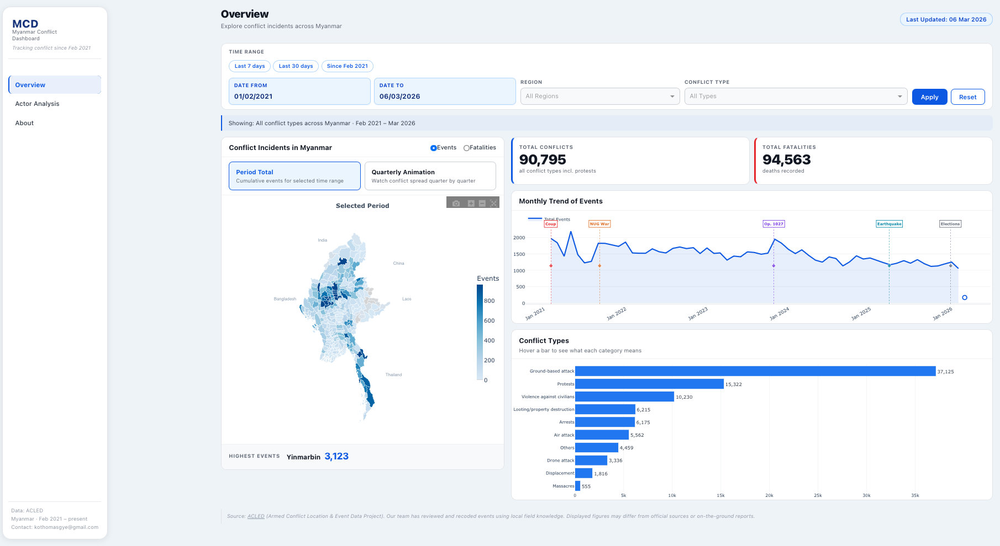
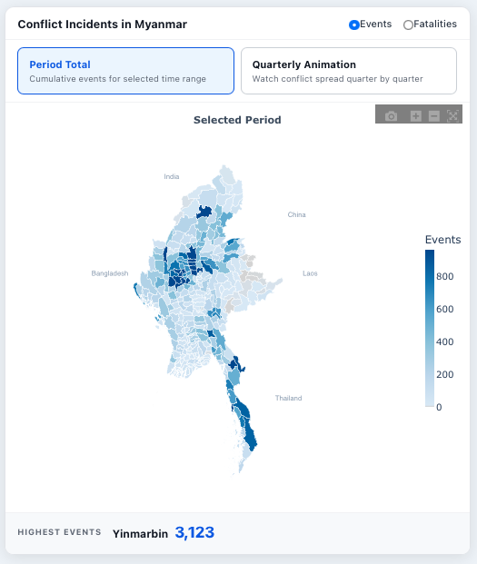
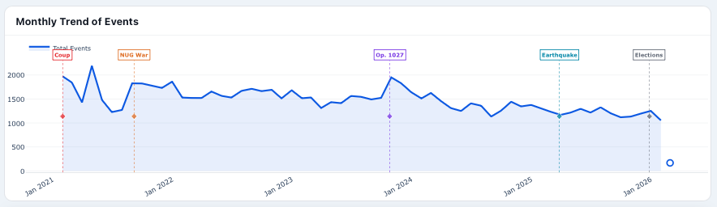
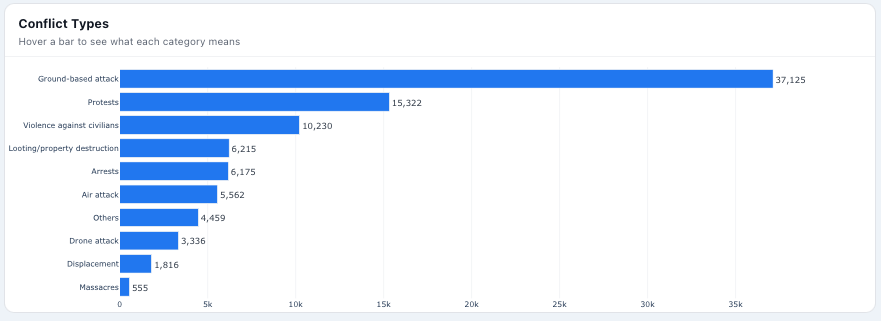
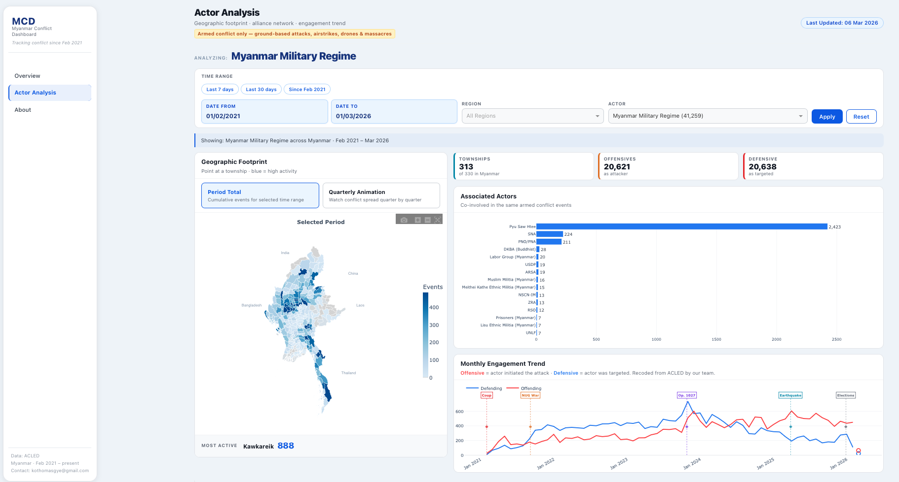
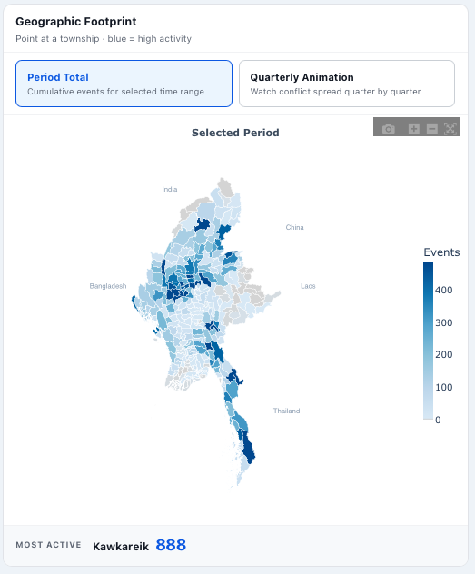
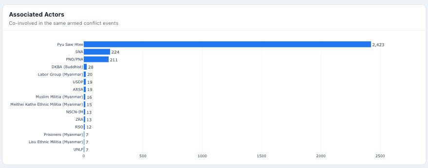
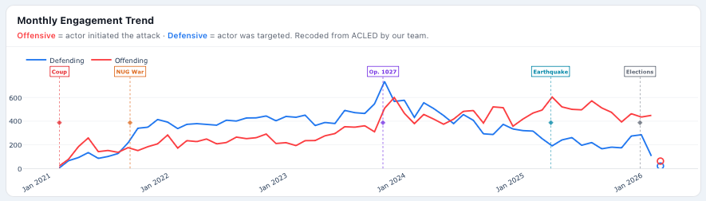
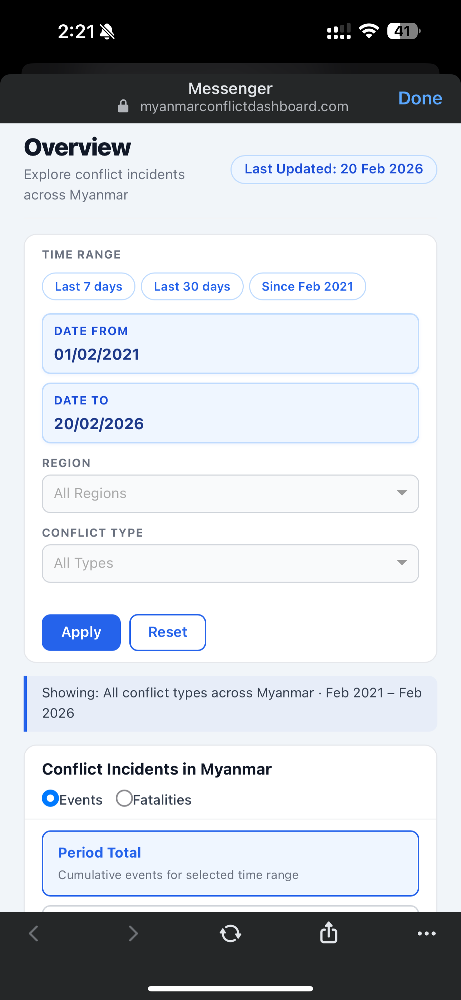

MSc Data Science, City St George's, University of London
Supervised by Dr Ernesto Priego
Dashboard: https://myanmarconflictdashboard.onrender.com
Conflict monitoring tools play a critical role in supporting humanitarian actors, journalists, researchers, and civil society organisations operating in active conflict zones. While global platforms such as ACLED Explorer provide a strong foundation for conflict data access and visualisation, practitioners working within specific country contexts often require interfaces contextualised to local actors, geographies, and analytical needs. This paper presents the Myanmar Conflict Dashboard, a two-page interactive web application that uses ACLED data as its foundation and extends it specifically for Myanmar practitioners. Design decisions were informed by two complementary streams: expert requirements elicited through semi-structured interviews with five purposively selected domain experts, structured using a ten-domain usability framework; and established principles from dashboard design, visual encoding, colour theory, temporal visualisation, and crisis informatics literature. Each design decision is traced through a design matrix linking user requirements to theoretical principles and implementation outcomes. A developer self-evaluation against the same ten usability domains confirms design traceability and surfaces remaining gaps for future work. The dashboard is publicly deployed and continuously updated via an automated weekly data pipeline. This paper contributes a replicable dual-stream design methodology applicable to contexts where globally designed tools inadequately serve local practitioner communities.
Keywords: conflict monitoring, Myanmar, dashboard design, user-centred design, visualisation theory, humanitarian informatics, ACLED
Since the military coup of 1 February 2021, Myanmar has experienced an escalating and multifaceted armed conflict involving the military junta (State Administration Council, SAC), the People's Defence Force (PDF) aligned with the National Unity Government, and numerous Ethnic Resistance Organisations (EROs). The humanitarian consequences have been severe: over three million people have been internally displaced, and violence against civilians — including aerial and drone strikes, forced conscription, and shelling — has intensified across multiple regions (UNHCR, 2025; Fishbein and J, 2024).
For humanitarian organisations, journalists, civil society groups, and researchers, timely and accessible conflict data is essential for planning, reporting, advocacy, and decision-making. The Armed Conflict Location and Event Data Project (ACLED) is among the most trusted global sources of conflict event data, recording incidents by date, location, actor, event type, and fatalities across more than 200 countries (Raleigh et al., 2023). ACLED also provides ACLED Explorer, an interactive platform that allows users to visualise conflict patterns through maps, time series, and filtered summaries — designed for global audiences and broad comparative use.
Building on ACLED's data and using ACLED Explorer as a design reference point, this paper asks: what additional contextual features would a Myanmar-specific conflict monitoring dashboard need, designed with and for local practitioners? Expert users working in Myanmar contexts require township-level geographic detail, actor-specific breakdowns, Myanmar-specific event categories such as drone strikes and displacement events, and flexible temporal exploration. The Myanmar Conflict Dashboard was developed to address these contextual requirements, extending and localising the analytical possibilities that ACLED data enables.
Dashboard design is not a neutral technical act. Decisions about which charts to include, how to encode data, which colours to use, and how to structure interaction reflect both what users need and what the research literature tells us works effectively. This paper makes that dual rationale explicit: every major design decision is traceable to a user requirement and a theoretical principle from the visualisation or humanitarian informatics literature.
The paper makes three contributions:
First, it presents a structured needs elicitation from five domain experts representing diverse Myanmar practitioner roles, using a ten-domain usability framework as a systematic lens applied to ACLED Explorer as a reference tool. Second, it provides a theoretically grounded design account — a design matrix — in which each dashboard feature is justified by both user need and established literature. Third, it describes a publicly deployed, continuously updated tool accompanied by a developer self-evaluation.
ACLED is widely regarded as one of the most rigorous sources of political violence and protest data. Its transparent methodology — codebooks, triangulated source collection, conservative fatality estimates, and weekly review cycles — makes it particularly credible for research and advocacy (Raleigh et al., 2023). For Myanmar specifically, ACLED maintains a dedicated methodology page reflecting the constraints of reporting in an active conflict zone, including internet shutdowns and risks to local journalists. These constraints mean that ACLED data should be read as indicative signals rather than exact counts (Weidmann, 2015).
Beyond ACLED Explorer, several Myanmar-specific dashboards exist: the NUG Ministry of Human Rights tracks massacres and aerial attacks; Myanmar Peace Monitor provides dashboards on armed conflict and airstrikes; the IISS Myanmar Conflict Map offers a visually clean interface for conflict events. Each serves a specific analytical purpose. What they share is a focus on particular event categories or actors, without combining township-level geography, actor-level analysis, and flexible temporal exploration in a single open-access platform. The Myanmar Conflict Dashboard aims to complement these tools by offering an integrated, context-specific analytical interface built on ACLED's comprehensive event-level data.
Few (2006) defines dashboards as single-screen tools for situational awareness, emphasising that KPI cards should enable immediate comprehension before detailed exploration begins. Bach et al. (2022), analysing 144 dashboards, identify the most empirically validated layout pattern as a top KPI strip combined with a central anchor chart and supporting detail charts, with filter panels placed at the top. Sarikaya et al. (2019), in a systematic analysis of 84 dashboards, find that the most effective dashboards serve a single primary task per view, with mixed-purpose designs reducing usability. These three bodies of work provide the primary theoretical basis for the dashboard's layout and two-page structure.
The architectural logic of the dashboard follows Shneiderman's (1996) widely cited Visual Information Seeking Mantra: overview first, zoom and filter, then details on demand. The Overview page provides a national-level situation; regional and conflict-type filters allow focused exploration; township-level tooltips provide precise detail on demand; and the Actor Analysis page provides deeper drill-down into specific actor dynamics.
Cleveland and McGill (1984), in a landmark study of graphical perception, ranked visual encoding channels by accuracy: position on a common scale is most accurate, followed by length, angle, and finally colour saturation — the least accurate channel for quantitative comparison. This hierarchy has direct implications for chart type selection and for understanding the inherent limitations of choropleth maps, which rely on colour saturation to encode event counts. The implication is that choropleth maps communicate spatial pattern effectively but must be complemented by tooltips that provide precise numerical values.
Tufte (1983) argues for maximising the data-ink ratio: every element of a chart should carry information, and decorative elements — unnecessary gridlines, borders, three-dimensional effects, and superfluous labels — reduce comprehension. Munzner (2014) provides a systematic framework for visualisation design, arguing that spatial position is the most powerful encoding channel and should be reserved for the most important variable — in a conflict monitoring context, geographic position.
Harrower and Brewer (2003), in the foundational paper accompanying the ColorBrewer tool, establish three colour scheme types for maps: sequential schemes for ordered data from low to high, diverging schemes for data with a meaningful midpoint, and qualitative schemes for categorical data. For conflict event density — an ordered quantity — a sequential scheme is theoretically correct. ColorBrewer specifically recommends single-hue sequential schemes for density maps, and the dashboard adopts a sequential blue scale. Blue is also politically neutral in the Myanmar context, where red and green carry associations with specific armed actors.
Ware (2004) describes preattentive processing — visual features that the brain processes before conscious attention, within approximately 200 milliseconds. Colour hue is among the most powerful preattentive features. This justifies using blue for Total Conflicts and red for Total Fatalities KPI cards: the distinction is processed instantly, without requiring users to read labels under time pressure.
Aigner et al. (2011) establish that line charts are the most effective encoding for continuous temporal sequences, and that event markers — annotations at specific time points — contextualise statistical patterns with real-world occurrences. In a conflict monitoring context, statistical spikes in violence are only interpretable when connected to the events that caused them: a coup, a major offensive, or a ceasefire breakdown. Milestone lines on the trend charts directly implement this principle.
Andrienko and Andrienko (2006) distinguish between two analytical tasks for spatio-temporal data: pattern recognition (observing how a spatial phenomenon changes over time) and precise comparison (comparing specific values at specific locations). They find animated maps effective for pattern recognition but static views better for precise comparison. The dual-mode choropleth design — Period Total static view and Quarterly Animation — is a direct implementation of this task-based distinction.
Palen et al. (2010) argue that information tools in crisis contexts face a distinct cognitive challenge: users make decisions under time pressure with incomplete information. This places a premium on cognitive load reduction — interfaces must support rapid comprehension without requiring extensive learning. Every simplification in the dashboard — limiting KPI cards to two or three, sorting bar charts by frequency, restricting tooltips to essential information — is defensible under this principle.
Vinck et al. (2019) argue that aggregation level decisions are not merely technical choices but ethical ones: village-level data could expose individuals in sparsely populated conflict zones, while township-level aggregation provides actionable geographic detail without individual identification risk. The decision to aggregate at township level in the dashboard is therefore an ethical design choice, supported by the availability of MIMU township shapefiles (330 features) and consistent with the do-no-harm principle in humanitarian informatics.
Almasi et al. (2023), in a systematic literature review of dashboard usability tools, identify ten domains that together provide comprehensive coverage: usefulness, suitability for task, situational awareness, satisfaction and trust, content, ease of use, operability, learnability, user interface design, and system capabilities. This ten-domain framework structures both the expert interviews and the subsequent self-evaluation, providing a consistent lens from requirements to evaluation. Nielsen and Landauer (1993) demonstrated that five users are sufficient to identify approximately 85% of usability problems in a system, providing a theoretical basis for the decision to conduct five expert interviews.
The design process followed a dual-stream approach. Stream one elicited user requirements from domain experts through semi-structured interviews, using the ten-domain usability framework as a systematic lens applied to ACLED Explorer as a shared reference tool. Stream two drew on the visualisation, dashboard design, and humanitarian informatics literature to identify theoretically grounded design principles. These two streams converged in a design matrix — a structured artifact linking each identified user requirement to a corresponding literature principle and implementation decision. The dashboard was built iteratively, and a self-evaluation against the same ten domains assessed the degree to which requirements were met.
Figure 1. Overview of the dual-stream design process.
Five domain experts were recruited through purposive selection to represent the diversity of professional roles that engage with Myanmar conflict data in practice. Participants included one NGO/INGO analyst (P1), one researcher/analyst working with conflict and geographic data (P2), one data analyst working across humanitarian response (P3), one conflict and policy analyst (P4), and one activist and politician (P5). Purposive selection was adopted because the goal was to capture expert knowledge across professional contexts, not to achieve statistical representativeness. Recruitment through professional networks established during the author's prior humanitarian work in Myanmar was considered necessary given the sensitive nature of the topic and the risks associated with public recruitment during an active conflict.
Semi-structured interviews were conducted individually via Zoom between 21 and 27 August 2025, each lasting approximately 45–60 minutes. Ethical procedures were followed throughout: participants received an information sheet and interview protocol in advance, digital consent was obtained through Qualtrics forms, and additional safety protocols were developed for discussions involving sensitive conflict-related content. Sessions were recorded with permission and detailed notes were taken and cross-checked against recordings immediately after each interview.
Each interview was structured around the ten usability domains (Almasi et al., 2023), with ACLED Explorer used as a shared reference point. Participants were invited to explore it during the session and to reflect on what additional features or contextual adaptations they would need for Myanmar-specific monitoring work. Open-ended questions allowed participants to raise concerns and ideas beyond the ten domains. Analysis followed rapid thematic coding, grouping responses by domain to produce a consolidated set of Myanmar-specific design requirements.
In parallel with the interview process, the visualisation and dashboard design literature was reviewed to identify principles applicable to each design decision. This review drew on foundational texts in visual encoding (Cleveland and McGill, 1984; Tufte, 1983; Munzner, 2014), colour theory (Harrower and Brewer, 2003; Ware, 2004), dashboard design (Few, 2006; Bach et al., 2022; Sarikaya et al., 2019), interaction design (Shneiderman, 1996; Norman, 2013), temporal visualisation (Aigner et al., 2011; Andrienko and Andrienko, 2006), and humanitarian informatics (Palen et al., 2010; Vinck et al., 2019). The resulting design matrix (Table 1) documents the convergence of these two streams for each major design decision.
The dashboard was implemented in Python using Plotly Dash, a reactive web framework that enables server-side callbacks to update charts in response to user filter changes without full page reloads. Plotly's native animation frame bundling was used for the Quarterly Animation choropleth, sending all animation frames to the client in a single payload. Data is stored in Parquet format, providing columnar storage and faster read times than CSV for the aggregation queries used.
The underlying data pipeline connects to the ACLED API using OAuth authentication, retrieves Myanmar conflict events, applies a standardised cleaning workflow — township code matching against MIMU GeoJSON boundaries (330 features), recoding of Myanmar-specific event categories, and date normalisation — and produces Parquet files consumed by the dashboard. The pipeline runs automatically every Monday via GitHub Actions, ensuring the dashboard reflects ACLED's most recent weekly data publication. The dashboard is publicly accessible at https://myanmarconflictdashboard.onrender.com without authentication.
Following deployment, the dashboard was evaluated by the author against the same ten usability domains used in the requirements elicitation phase. For each domain, the evaluation asked: what requirement was identified in the interviews? What was implemented? To what extent was the requirement met? This self-evaluation is presented as a design traceability check rather than a formal user study, and its limitations — including the risk of confirmation bias — are acknowledged explicitly in Section 7.
The five interviews produced a consistent set of requirements across the ten usability domains. Using ACLED Explorer as a shared reference point, participants articulated what a Myanmar-specific tool would additionally require. The following presents the key themes by domain. A summary is provided in Table 2.
Across all five participants, ACLED Explorer was valued as a quick overview tool. P1 noted that headline figures — total fatalities and event counts — visible at a glance were immediately useful. P3 and P5 both identified the Myanmar map and core data cards as the first thing they want to see. However, participants consistently noted that for Myanmar-specific professional work, the reference tool's global design limits its depth: P1 and P3 reported relying on the raw ACLED data files for detailed analysis rather than the dashboard interface. P5 noted that data from central Myanmar — Sagaing, Magway, Mandalay — reflecting small battles often under-reported in mainstream media, is particularly valuable and should be prominently accessible.
All five participants described the reference dashboard as a briefing or supporting tool rather than a primary analytical instrument. P1 and P2 expressed a preference for downloadable data tables over static figure exports, to allow further analysis in their organisations' own tools. P3 and P4 raised the need for more customisable controls, particularly for time filtering — preferring date range selectors over fixed radio button presets.
Understanding actor dynamics was the most consistently voiced situational awareness gap. P2 and P5 both noted that actor information — which groups are involved and how they interact — is missing from the reference tool and is essential for understanding conflict dynamics. P5 specifically noted that responsibility for civilian targeting is unclear without actor-level data. P1 saw value in highlighting abnormal spikes in conflict activity to support rapid situational assessment. P3 suggested that actor representation should be simplified — limited to main actors with aggregated figures — to avoid cognitive overload from the large number of named actors. P4 noted the importance of capturing major alliance formations, such as the coalition active in Operation 1027.
Trust in ACLED as a data source was consistently high across participants. P3 described ACLED as less biased because it triangulates news from multiple sources. P4 emphasised ACLED's strong reputation and methodology as the basis for trust. P1 noted that trust depends on the visibility of source information and notes within the interface — not all events' sources are clearly presented. P2 raised an important nuance: while the dashboard is trustworthy for international audiences who expect generalisation, Myanmar locals may require higher source granularity for credibility.
Township-level geographic disaggregation was raised by P1, P3, and P5 as the most important content gap. P1 requested that air strikes and drone attacks be distinguished as separate event categories rather than grouped together. P2 and P5 identified actor relationships and co-occurrence patterns as missing content — P2 noted that the reference dashboard does not show actor relationships clearly. P4 raised the value of localising event and conflict categories to Myanmar's specific conflict context.
Most participants found basic navigation straightforward. P5 appreciated a spacious layout that is easy on the eyes, while also noting that map zooming can cause users to lose orientation — requesting a reset or lock function for the map. P3 preferred date range selectors over preset radio buttons for time filtering. P4 noted that the optimal number of charts per page is approximately five, beyond which information density becomes overwhelming.
Interactive map drill-down was requested by multiple participants: P1 and P4 noted that clicking on a region should filter the dashboard to that location. P3 and P4 expressed a preference for more customisable controls, particularly for regional and temporal filtering. P1 noted that the interaction model should keep other regions visible when a specific one is selected, rather than removing them.
The term "exposure" was identified by P3, P4, and P5 as unclear without explanation. P4 suggested replacing it with "population at risk" as a more intuitive label. P3 also noted difficulty with "strategic developments" as a category name. P1 suggested hover tooltips as the preferred mechanism for term clarification — consistent with a preference for progressive disclosure over persistent labels. P4 requested a tutorial or walkthrough for first-time users; P1 and P2 did not consider this necessary given their familiarity with ACLED data.
Opinions on visual design were mixed but converged on several points. P3 and P4 appreciated a simple, uncluttered layout. P1 requested stronger colour intensity to reflect event magnitude, suggesting that colours should scale with severity. P5 noted that the map itself creates a powerful sense of personal relevance and ownership — "this is happening in my country" — making the geographic view the most emotionally meaningful element. P3 suggested choropleth maps as preferable to dense point plots for readability.
Responsiveness and load speed were considered acceptable across all participants. P1, P3, and P4 requested the ability to save filter settings between sessions. P1, P2, P3, and P4 requested downloadable data outputs — not figure images, but data tables. Mobile accessibility was raised by P2, P3, P4, and P5, with P5 noting that map zooming is particularly problematic on mobile devices.
| Domain | Key Myanmar-Specific Requirements | Participants |
|---|---|---|
| Usefulness | Core KPI cards at a glance; township-level detail; central Myanmar data coverage | P1, P2, P3, P5 |
| Suitability | Flexible date filtering; downloadable data tables; analytical depth beyond briefing | P1, P2, P3, P4 |
| Situational Awareness | Actor-level dynamics; who drives civilian targeting; alliance representation | P2, P3, P4, P5 |
| Satisfaction & Trust | Source visibility; methodology transparency; acknowledgement of data limitations | P1, P2, P3, P4 |
| Content | Township map; actor co-occurrence; separate drone strikes; Myanmar-specific event categories | P1, P2, P3, P5 |
| Ease of Use | Date range selector; spacious layout; map reset button; ≤5 charts per page | P1, P3, P4, P5 |
| Operability | Region drill-down by clicking; keep other regions visible; customisable filters | P1, P3, P4 |
| Learnability | Hover tooltips for terms; replace "exposure" with plain language | P1, P3, P4, P5 |
| User Interface | Colour intensity reflects magnitude; choropleth over point plots; uncluttered layout | P1, P3, P4, P5 |
| System Capabilities | Save filter settings; downloadable data; mobile-friendly map navigation | P1, P2, P3, P4, P5 |
Table 2. Summary of Myanmar-specific requirements by usability domain and contributing participants.
Table 1 presents the design matrix, documenting for each major feature: the Myanmar-specific requirement that motivated it, the literature principle that informed how it was implemented, the design decision taken, and its implementation status. This dual justification — user requirement and theoretical grounding — is the core methodological contribution of the dual-stream approach.
| Domain | User Requirement | Literature Principle | Design Decision | Status |
|---|---|---|---|---|
| Usefulness | Core KPI figures at a glance (P1, P3) | Few (2006): KPI cards for immediate situational awareness | Two KPI cards: Total Conflicts (blue), Total Fatalities (red) | Done |
| Usefulness | Regular data updates (P1) | Few (2006): dashboards should reflect current situational reality | ACLED API pipeline; GitHub Actions Monday auto-update | Done |
| Suitability | Flexible temporal filtering; date range selector preferred over presets (P3, P4) | Norman (2013): affordances; Bach et al. (2022): filter bar at top | Date presets (Last 7/30 days, Since Feb 2021) + custom date-from/to pickers; Apply/Reset buttons | Done |
| Suitability | Downloadable data tables (P1, P2, P3, P4) | — | Not implemented — ACLED terms of use restrict raw data redistribution | Not Done |
| Situational Awareness | Actor-level dynamics; who drives events (P2, P5) | Sarikaya et al. (2019): single primary task per view | Dedicated Actor Analysis page with actor selector, geographic footprint choropleth, associated actors bar chart, engagement trend | Done |
| Situational Awareness | Statistical patterns connected to real-world events (P1, P4) | Aigner et al. (2011): event markers contextualise temporal patterns | Milestone vertical lines on both trend charts: coup, Operation 1027, key offensives | Done |
| Satisfaction & Trust | Methodology transparency and source attribution (P1, P3, P4) | Vinck et al. (2019): transparency is foundational in conflict contexts | Dedicated About and Methodology pages; ACLED attribution on all charts | Done |
| Content | Township-level geographic breakdown (P1, P3, P5) | Harrower & Brewer (2003): sequential choropleth for density; Munzner (2014): spatial position for primary variable | Township choropleth map — sequential blue scale; grey for zero; 95th-percentile cap | Done |
| Content | Actor co-occurrence patterns (P2, P5) | Cleveland & McGill (1984): length encoding more accurate than colour for comparison | Associated Actors bar chart — ranked co-occurrence by frequency | Done |
| Content | Separate drone strikes from airstrikes (P1) | Tufte (1983): data should be coded at the level of analytical need | Drone strikes recoded as distinct event category; displacement separated from "Other" | Done |
| Ease of Use | Map reset after zooming (P5) | Bach et al. (2022): navigation controls reduce disorientation | Reset button restores full national map view | Done |
| Operability | Region-level filtering (P1, P4) | Shneiderman (1996): zoom and filter stage of the mantra | Region dropdown filter as proxy for map drill-down | Partial |
| Operability | Mobile accessibility (P2, P3, P4, P5) | Palen et al. (2010): crisis tools must be accessible under resource constraints | Mobile top navigation bar; responsive Bootstrap layout | Partial |
| Learnability | Hover tooltips for technical terms (P1, P3, P4, P5) | Progressive disclosure; Nielsen (2012): recognition not recall | Hover tooltips on charts; About page with plain-language explanations | Partial — glossary not implemented |
| User Interface | Colour intensity reflects event magnitude (P1, P3) | Harrower & Brewer (2003): luminance range in sequential scale; Ware (2004): preattentive contrast | Sequential blue with increased luminance range; consistent typography; minimal sidebar | Done |
| System Capabilities | Responsive performance (all participants) | Few (2006): dashboards must respond under real conditions | Parquet format for fast reads; server-side caching; client-side animation frames | Done |
| System Capabilities | Save filter settings (P1, P3, P4) | — | Not implemented within timeframe | Not Done |
Table 1. Design matrix linking user requirements, literature principles, design decisions, and implementation status.
The Overview page is the primary situational awareness view, implementing the first stage of Shneiderman's (1996) mantra: overview first. A filter bar at the top — consistent with the most validated dashboard pattern identified by Bach et al. (2022) — provides date presets, custom date pickers, a region dropdown, a conflict type dropdown, and Apply/Reset buttons. Norman's (2013) principle of affordances informed the design of these controls: buttons are visually distinct from labels, and the Apply/Reset pair makes the interaction model explicit.
Two KPI cards provide immediate situational awareness (Few, 2006): Total Conflicts in blue and Total Fatalities in red. The colour distinction is grounded in Ware's (2004) preattentive processing principle — colour hue is processed before conscious attention, ensuring the distinction between event counts and fatality counts is grasped instantly.
The central anchor chart is a township-level choropleth map of Myanmar's 330 townships. A sequential single-hue blue scale is applied, following Harrower and Brewer's (2003) recommendation for ordered conflict density data. Grey is used for townships with zero recorded events, following standard cartographic practice to distinguish absence of events from low activity (Juergens, 2020). A 95th-percentile cap on the colour scale prevents high-conflict townships from flattening variation across the rest of the country — a common practical issue in conflict data where a small number of townships account for a disproportionate share of events. Hover tooltips provide precise event counts, addressing the inherent limitation of colour saturation as a quantitative encoding channel (Cleveland and McGill, 1984): the map communicates spatial pattern while the tooltip provides exact value.
The choropleth offers two modes: Period Total, aggregating all events across the selected date range into a single static map; and Quarterly Animation, stepping through quarterly snapshots to reveal geographic diffusion of conflict over time. This dual-mode design directly implements Andrienko and Andrienko's (2006) task-based distinction: the static mode serves precise spatial comparison, while the animation mode supports pattern recognition — observing how conflict has expanded or shifted geographically.
A Monthly Trend line chart shows event counts over time by event type. Line charts are optimal for continuous temporal sequences (Aigner et al., 2011; Tufte, 1983), conveying direction and rate of change more effectively than bar charts for trend data. Milestone vertical lines mark key events — the February 2021 coup, the launch of Operation 1027 in October 2023, and other significant developments — implementing Aigner et al.'s (2011) recommendation to contextualise statistical spikes with real-world occurrences.
A Conflict Types bar chart displays the ten most frequent detailed event categories, sorted by frequency. Bar charts are appropriate for categorical comparison: length is ranked second in Cleveland and McGill's (1984) perceptual accuracy hierarchy, and sorting by frequency enables immediate identification of dominant conflict forms. Restricting to the top ten follows Tufte's (1983) data-ink principle.

Figure 2. Myanmar Conflict Dashboard — Overview Page. Filter bar and quick-select presets (top), two KPI cards (Total Conflicts in blue, Total Fatalities in red), township-level choropleth map in Period Total mode, Monthly Trend of Events with milestone annotations, and Conflict Types bar chart (sorted by frequency).

Figure 2a. Township choropleth map (sequential blue scale; Period Total mode). Yinmarbin township is highlighted as highest-event location.

Figure 2b. Monthly Trend of Events with five milestone annotations: Coup (Feb 2021), NUG War (Sep 2021), Op. 1027 (Oct 2023), Earthquake (Mar 2025), Elections (Nov 2025).

Figure 2c. Conflict Types bar chart — ten categories sorted by frequency. Ground-based attacks dominate (37,125), followed by protests (15,322) and violence against civilians (10,230).
The Actor Analysis page provides deeper drill-down into specific actor dynamics, implementing the second level of Shneiderman's (1996) mantra. Separating this view from the Overview page follows Sarikaya et al.'s (2019) finding that dashboards serving a single primary task per view are more effective than mixed-purpose designs: the Overview page serves situational monitoring; the Actor Analysis page serves actor-specific investigation.
The filter bar includes the same date controls as the Overview page, supplemented by an Actor selector dropdown. Three KPI cards provide an immediate actor profile: Townships Affected, Offensives, and Defensive actions — enabling rapid comprehension of an actor's scale and character of activity before chart-level exploration (Few, 2006).
The Geographic Footprint choropleth applies the same sequential blue scale and dual-mode design as the Overview map, showing the spatial distribution of events involving the selected actor. This allows users to quickly understand where a given actor is most active across Myanmar's 330 townships.
An Associated Actors bar chart shows which other actors most frequently co-appear with the selected actor, ranked by frequency. This applies the same Cleveland and McGill (1984) principle as the Conflict Types bar — length encoding sorted for categorical comparison — providing the actor-level relational insight that participants consistently identified as missing from the reference tool.
A Monthly Engagement Trend line chart displays the selected actor's event involvement over time, with the same milestone overlay as the Overview trend. This allows users to connect an actor's activity peaks to specific conflict events, offensives, or ceasefires.

Figure 3. Myanmar Conflict Dashboard — Actor Analysis Page (Myanmar Military Regime selected). Actor selector filter, three KPI cards (Townships Affected, Offensives, Defensive Events), geographic footprint choropleth, Associated Actors bar chart ranked by co-occurrence, and Monthly Engagement Trend with milestone annotations.

Figure 3a. Geographic Footprint — actor-filtered township choropleth showing spatial distribution of the selected actor's events. Kawkareik is the most active township (888 events).

Figure 3b. Associated Actors bar chart — co-actors ranked by event co-occurrence. Pyu Saw Htee (2,423) is the most frequent co-actor with the Myanmar Military Regime.

Figure 3c. Monthly Engagement Trend — Offensive (red) and Defensive (blue) event counts with milestone annotations, enabling temporal analysis of actor behaviour.

Figure 4. Mobile responsive view of the Overview page on a smartphone. Controls adapt to a stacked single-column layout with a sticky top navigation bar, addressing the mobile accessibility requirements raised by P2, P3, P4, and P5.
Several design decisions apply consistently across both pages. The sidebar navigation is deliberately minimal — light background, no decorative elements — so that it does not compete visually with the data (Tufte, 1983). Consistent visual language across pages — identical colour scales, chart styles, and filter patterns — reduces the cognitive overhead of switching between views (Palen et al., 2010). Milestone lines appear on trend charts on both pages, ensuring that temporal context is always available. The ethical decision to aggregate at township level rather than village level follows Vinck et al.'s (2019) do-no-harm principle for conflict data visualisation.
The data pipeline connects to the ACLED API via OAuth authentication, retrieves all Myanmar conflict events, and applies a standardised cleaning workflow: date parsing with dayfirst handling, township code matching against MIMU GeoJSON boundaries, recoding of Myanmar-specific event categories (drone strikes as a distinct category; displacement separated from "Other"), and export to Parquet files. The pipeline runs automatically every Monday at 06:00 UTC via GitHub Actions, using a git pull --rebase step before pushing to prevent conflicts between automated runs. The pipeline code is publicly versioned on GitHub, ensuring reproducibility.
Following deployment, the dashboard was evaluated by the author against the same ten usability domains used in the expert interviews. Table 3 presents the findings. Each domain is assessed against the requirement identified in the interviews and the feature implemented.
| Domain | Requirement (from interviews) | Implementation | Assessment |
|---|---|---|---|
| Usefulness | KPI cards at a glance; Myanmar-specific content; regular updates | Two KPI cards; Myanmar event recoding; weekly auto-update pipeline | Met |
| Suitability | Flexible exploration; date range selector; analytical depth | Custom date pickers; region and conflict type filters; Apply/Reset | Met |
| Situational Awareness | Actor-level dynamics; temporal context tied to real events | Actor Analysis page with actor selector and engagement trend; milestone lines on all trend charts | Met |
| Satisfaction & Trust | Methodology transparency; source attribution | About and Methodology pages; ACLED attribution throughout | Partial — event-level source notes not shown |
| Content | Township map; actor co-occurrence; Myanmar-specific event categories | Township choropleth; associated actors bar chart; drone strikes and displacement recoded | Met |
| Ease of Use | Flexible date filtering; map reset; spacious layout; ≤5 charts per page | Date presets + custom pickers; Reset button; 3 charts per page maximum | Met |
| Operability | Region drill-down; mobile accessibility | Region dropdown filter; mobile top navigation bar | Partial — map click interactivity limited; mobile map zooming not fully resolved |
| Learnability | Hover tooltips for terms; plain-language labels | Hover tooltips; About page explanatory text; renamed labels | Partial — full glossary not implemented |
| User Interface | Colour intensity reflects magnitude; uncluttered layout; choropleth over point plots | Sequential blue scale with luminance range; choropleth maps throughout; minimal sidebar | Met |
| System Capabilities | Responsive performance; downloadable data; save filter settings | Parquet format + caching; figure PNG export only; filter saving not implemented | Partial — performance met; data export and filter saving not available |
Table 3. Self-evaluation against ten usability domains.
The self-evaluation shows that five of the ten domains were fully met and five were partially met — none remain entirely unaddressed. The strongest outcomes are in usefulness, suitability, situational awareness, content, and user interface — the domains most directly tied to Myanmar-specific contextualisation. Learnability and system capabilities show the clearest remaining gaps, reflecting features (glossary, data export, filter saving) that were identified in interviews but could not be fully implemented within the project's resource and time constraints.
The central methodological contribution of this project is the dual-stream design process, in which user requirements and theoretical principles are treated as equally necessary and explicitly documented in a design matrix. Neither stream alone is sufficient: users know what they need analytically, but not necessarily which chart type encodes it most accurately; the literature knows which design patterns work, but not which features matter most to a Myanmar NGO analyst working under time pressure. Their convergence produces design decisions that are both contextually grounded and theoretically justified.
The design matrix is the practical artifact of this convergence. It serves two purposes: as a design tool during development, making rationale explicit and preventing arbitrary decisions; and as a transparency tool in reporting, allowing readers to audit every design choice. This approach is transferable: any context where a global-purpose tool is being extended or localised for a specific practitioner community could apply the same methodology, substituting the ten-domain framework with whatever usability framework is most appropriate to the domain.
Several design decisions involved deliberate trade-offs. The quarterly animation choropleth can be critiqued on Tuftean grounds: small multiples — quarterly maps displayed side by side — might support more precise comparison than sequential animation (Tufte, 1983). The animation mode was retained because its primary analytical task is pattern recognition (observing geographic diffusion of conflict over time) rather than precise value comparison, which is served by the static Period Total mode. Together the two modes cover both tasks; small multiples alone would not achieve this within the available screen space.
The use of colour saturation in the choropleth carries the inherent limitation identified by Cleveland and McGill (1984): users cannot accurately compare event counts between townships by colour alone. This is addressed by the tooltip design — the map communicates spatial pattern; the tooltip provides precise values. This is a deliberate compensation rather than an oversight, and is consistent with how participants described their use of the reference tool: the map for orientation, supplementary data for precision.
Participant opinions on visual density diverged: P1 requested stronger colour contrast while P5 valued a spacious, calm layout — a tension that reflects known variation in user preferences across analytical and non-expert audiences (Vuckovic et al., 2024). The final design prioritises the sequential blue scale with an increased luminance range (addressing P1's concern) while retaining a minimal, uncluttered layout (consistent with P5's preference and Tufte's data-ink principle).
Several limitations should be acknowledged. The expert panel of five was purposively selected for role diversity but cannot be considered statistically representative of all Myanmar practitioner groups. The self-evaluation is subject to confirmation bias: the same person who designed the dashboard assessed whether it met requirements. Independent evaluation with a broader practitioner panel is essential before claims of usability improvement can be made with confidence.
ACLED data itself carries underreporting bias in Myanmar, where internet shutdowns and restrictions on journalists mean that many events may go unrecorded (Weidmann, 2015). Dashboard outputs should be read as indicative signals rather than complete counts — a limitation that several participants explicitly acknowledged. The Modifiable Areal Unit Problem (MAUP) also applies: township boundaries are administrative units, and within-township variation in conflict intensity is not visible at the choropleth level.
Learnability and system capabilities remain only partially addressed. The absence of a full glossary means that users unfamiliar with ACLED terminology — particularly the term "exposure," which multiple participants found opaque — may face a learning barrier. The inability to export filtered data limits the dashboard's utility for users who need further analysis outside the interface, though this is constrained by ACLED's terms of use rather than a technical limitation.
While the Myanmar Conflict Dashboard is designed for a specific country context, the dual-stream design process is not context-specific. The combination of expert requirements elicitation using a structured usability framework, theoretical grounding from the visualisation literature, and transparent documentation through a design matrix could be applied to other conflict or humanitarian monitoring contexts — for example, Sudan, Yemen, or the Sahel — where global platforms similarly lack the contextual granularity that local practitioners need. The methodology also applies beyond conflict: any domain in which a general-purpose platform serves a specialised practitioner community could benefit from this dual-stream approach.
This paper presented the Myanmar Conflict Dashboard, a two-page interactive conflict monitoring tool built using a user-centred design process grounded in visualisation theory, dashboard design principles, colour science, and humanitarian informatics. Using ACLED Explorer as a reference baseline and data foundation, the project asked what a Myanmar-specific extension of that foundation would look like when designed with and for local practitioners.
Five domain expert interviews, structured using a ten-domain usability framework, surfaced a consistent set of Myanmar-specific requirements: township-level geography, actor-level analysis, recoded event categories, flexible temporal filtering, and methodological transparency. These requirements were implemented through design decisions justified by both user need and established literature, documented in a design matrix that constitutes the primary methodological contribution of this work. A self-evaluation confirms that five of ten domains were fully met and five partially met, with learnability and system capabilities presenting the clearest remaining gaps.
The dashboard is publicly deployed, continuously updated via an automated weekly pipeline, and accessible without authentication. Future work should prioritise formal user evaluation with a broader practitioner panel, implementation of a glossary and plain-language term labelling to address the learnability gap, and contextual overlays — territorial control, infrastructure, displacement corridors — that would substantially enhance situational awareness for humanitarian and advocacy users. The dual-stream design methodology is offered as a replicable approach for any context where globally designed tools inadequately serve the needs of local practitioner communities.
Aigner, W., Miksch, S., Schumann, H. and Tominski, C. (2011) Visualization of Time-Oriented Data. London: Springer.
Almasi, S., Bahaadinbeigy, K., Ahmadi, H., Sohrabei, S. and Rabiei, R. (2023) 'Usability Evaluation of Dashboards: A Systematic Literature Review of Tools', BioMed Research International, 2023, 9990933. https://doi.org/10.1155/2023/9990933
Andrienko, G. and Andrienko, N. (2006) Exploratory Analysis of Spatial and Temporal Data: A Systematic Approach. Berlin: Springer.
Bach, B., Freeman, E., Abdul-Rahman, A., Turkay, C., Khan, S., Fan, Y. and Chen, M. (2022) 'Dashboard Design Patterns', IEEE Transactions on Visualization and Computer Graphics. https://doi.org/10.48550/arXiv.2205.00757
Cleveland, W.S. and McGill, R. (1984) 'Graphical Perception: Theory, Experimentation, and Application to the Development of Graphical Methods', Journal of the American Statistical Association, 79(387), pp. 531–554.
Few, S. (2006) Information Dashboard Design: The Effective Visual Communication of Data. Sebastopol: O'Reilly Media.
Fishbein, E. and J, E. (2024) 'Myanmar: airstrike on school killed four children, witnesses say', The Guardian.
Harrower, M. and Brewer, C.A. (2003) 'ColorBrewer.org: An Online Tool for Selecting Colour Schemes for Maps', The Cartographic Journal, 40(1), pp. 27–37.
Juergens, C. (2020) 'Trustworthy COVID-19 Mapping: Geo-spatial Data Literacy Aspects of Choropleth Maps', KN Journal of Cartography and Geographic Information, 70, pp. 155–161.
Munzner, T. (2014) Visualization Analysis and Design. Boca Raton: CRC Press.
Nielsen, J. and Landauer, T.K. (1993) 'A Mathematical Model of the Finding of Usability Problems', in Proceedings of ACM INTERCHI'93 Conference, Amsterdam, 24–29 April 1993, pp. 206–213.
Norman, D. (2013) The Design of Everyday Things. Revised edn. New York: Basic Books.
Palen, L., Vieweg, S., Liu, S.B. and Hughes, A.L. (2010) 'Crisis in a Networked World: Features of Computer-Mediated Communication in the April 16, 2007 Virginia Tech Event', Social Science Computer Review, 27(4), pp. 467–480.
Raleigh, C., Kishi, R. and Linke, A. (2023) 'Political Instability Patterns are Obscured by Conflict Dataset Scope Conditions, Sources, and Coding Choices', Humanities and Social Sciences Communications, 10, 74. https://doi.org/10.1057/s41599-023-01559-4
Sarikaya, A., Correll, M., Bartram, L., Tory, M. and Fisher, D. (2019) 'What Do We Talk About When We Talk About Dashboards?', IEEE Transactions on Visualization and Computer Graphics, 25(1), pp. 682–692.
Shneiderman, B. (1996) 'The Eyes Have It: A Task by Data Type Taxonomy for Information Visualizations', in Proceedings of the IEEE Symposium on Visual Languages, Boulder, CO, 3–6 September 1996, pp. 336–343.
Tufte, E.R. (1983) The Visual Display of Quantitative Information. Cheshire, CT: Graphics Press.
UNHCR (2025) Situation Myanmar. Available at: https://data.unhcr.org/en/situations/myanmar (Accessed: 20 March 2026).
Vuckovic, A., Mehta, R. and Pickering, C. (2024) 'Dashboard Design for Diverse Audiences: Lessons from Iterative User Testing', Information Visualization, 23(2), pp. 115–131.
Vinck, P., Pham, P.N., Kreutzer, T. and Wirtz, A. (2019) 'Collective Sensing and the Ethics of Data in Humanitarian Crises', in Proceedings of the ISCRAM 2019 Conference, Valencia, May 2019.
Ware, C. (2004) Information Visualization: Perception for Design. 2nd edn. San Francisco: Morgan Kaufmann.
Weidmann, N.B. (2015) 'On the Accuracy of Media-based Conflict Event Data', Journal of Conflict Resolution, 59(6), pp. 1129–1149.
Draft — Myanmar Conflict Dashboard — March 2026 · Live Dashboard